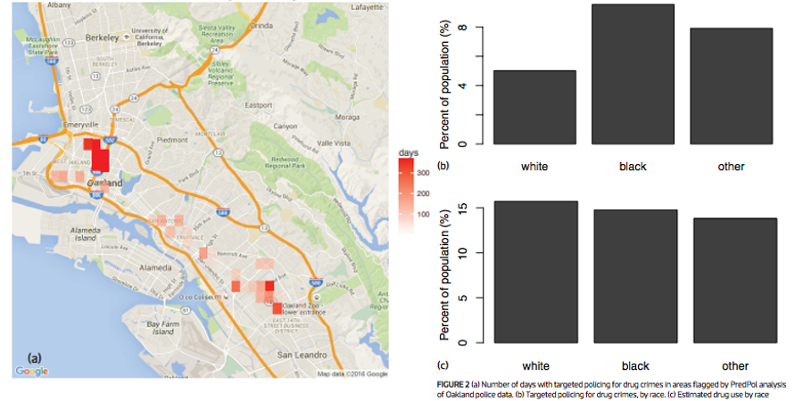
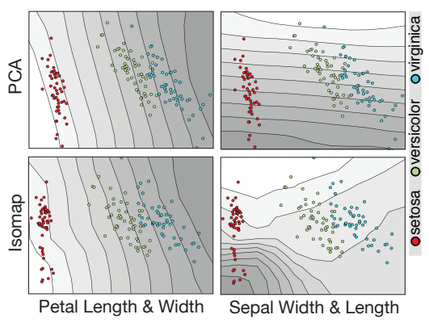
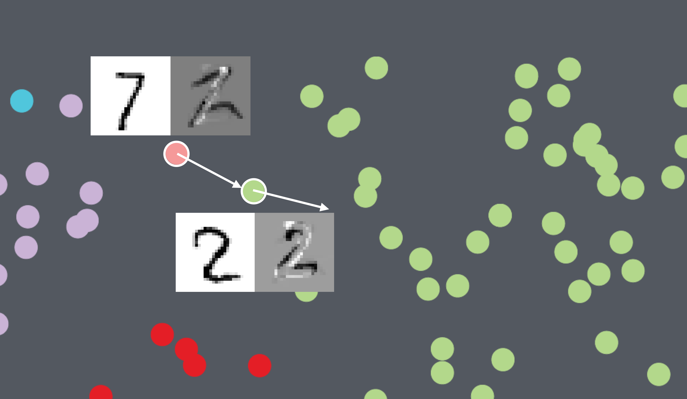
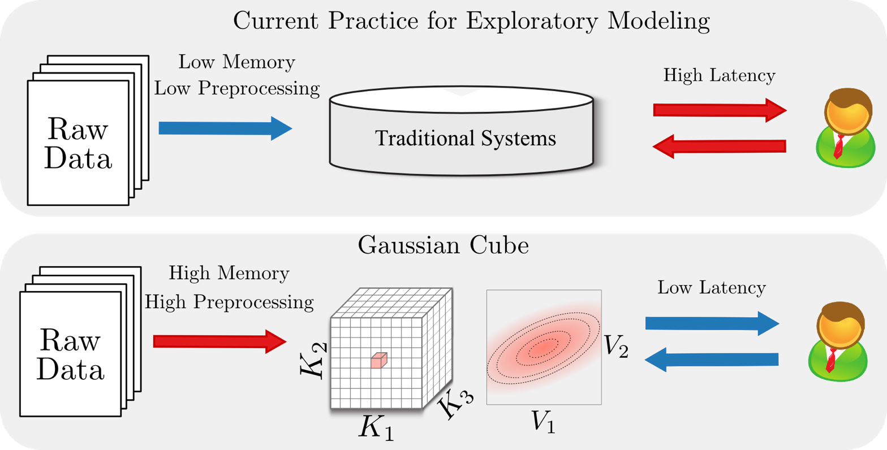
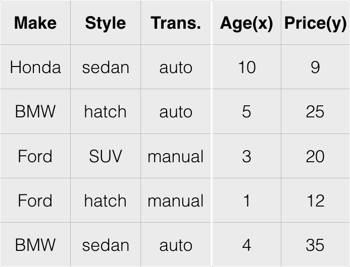
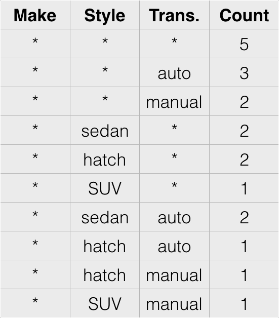
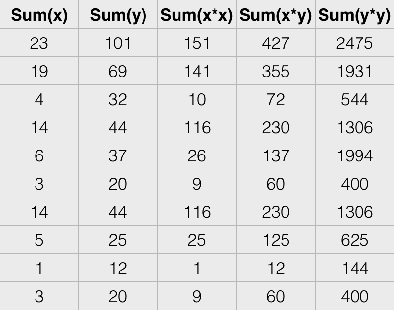
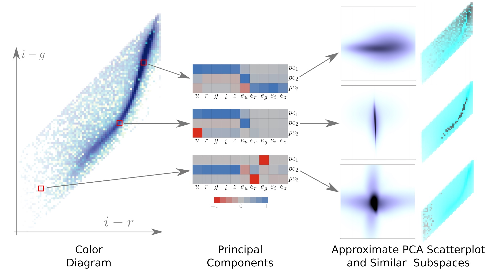

DATA SCIENCE, HUMANELY

Things that keep me up at night
Reinhart-Rogoff
This work was widely cited as a justification for the austerity measures in the EU
Herndon-Ash-Pollin
This is the world we created!
Our data science infrastructure is not humane
Predictive Policing
Deployed in major cities: Santa Cruz, Los Angeles, etc.
Lum and Isaac, Significance, 2016

Lum and Isaac, Significance, 2016
This is the world we created!

Our data science infrastructure is inhumane
Our ability to automate has far outpaced our ability to validate
Automation is not going away: we ought to empower people in this new context
DimReader: Axis Lines that Explain Non-Linear Projections


InfoVis 2018
Rebecca Faust, David Glickenstein, Carlos Scheidegger
t-SNE plots are beautiful, but what are they showing us?
A simpler example: the iris dataset
| Sepal Length | Sepal Width | Petal Length | Petal Width | Species |
|---|---|---|---|---|
| 5.1 | 3.5 | 1.4 | 0.2 | setosa |
| 4.9 | 3.0 | 1.4 | 0.2 | setosa |
| 4.7 | 3.2 | 1.3 | 0.2 | setosa |
| ... | ||||
| 7.0 | 3.2 | 4.7 | 1.4 | versicolor |
| 6.4 | 3.2 | 4.5 | 1.5 | versicolor |
| 6.9 | 3.1 | 4.9 | 1.5 | versicolor |
| ... | ||||
| 6.3 | 3.3 | 6.0 | 2.5 | virginica |
| 5.8 | 2.7 | 5.1 | 1.9 | virginica |
| 7.1 | 3.0 | 5.9 | 2.1 | virginica |
| ... |
t-SNE visualization
Tangent maps of algorithms

author: "User from reddit", CC BY 3.0
Tangent maps of algorithms
- First-order understanding: visualizations should inform us about the local context of the data
- Influence functions and robust statistics, tools from 1970s: if this point had been more important, how would the model change?
- Counterfactual reasoning: "how would Y behave had X been different?". See Google PAIR's What If?
How: Automatic Differentiation ("autodiff")
- Differentials are context-free, so rules are syntactic and local
- Typical program evaluation: given expression and values of containing variables, you can deduce the value of the expression
- With autodiff: given expression, values of containing variables, and values of their derivatives, you can deduce the value of the expression, and the value of its derivatives
Using the tangent map
Option 1: provide a perturbation
- This is the mode I've shown you so far
- User picks a direction that makes intuitive sense, DimReader measures the direction of change in the projected points, and reconstructs the axis
This lets us compare DR methods

This lets us compare DR methods

But what if there's no obvious direction?
But what if there's no obvious direction?
- Option 2: let DimReader infer a good perturbation
- We have access to the entire tangent map, let's do math on it
The structure of the tangent map for DR problems
- The tangent map is (effectively) sparse and block-structured.
- $$\left ( \begin{array}{cccc} B_1 & 0 & \cdots & 0 \\ 0 & B_2 & \cdots & 0 \\ \vdots & \vdots & \ddots & \vdots \\ 0 & 0 & \cdots & B_n \end{array} \right ) $$
- If the DR method sends points from $R^k$ to $R^d$, then each block $B_i$ is $d \times k$
Eigenproblems for Perturbation Discovery
- The tangent map is linear, and we will be seeking perturbation directions that maximize some criteria
- Lots of interesting possibilities, but we focus on the following formulation:
- $$\textrm{argmax}_{p \in R^{d \times n}} \sum_i || B_i p_i ||^2 - \lambda \sum_i \sum_j ||p_i - p_j||^2 S(i,j)$$
- $$\textrm{s.t.}\ ||p||^2 - 1 = 0$$
Eigenproblems for Perturbation Discovery
- $$\textrm{argmax}_{p \in R^{d \times n}} \sum_i || B_i p_i ||^2 - \lambda \sum_i \sum_j ||p_i - p_j||^2 S(i,j)$$
- $$\textrm{s.t.}\ ||p||^2 - 1 = 0$$
- $B_i$ holds the blocks of the tangent map
- $S$ encodes similarity between projection positions
- $\lambda$ is a user-specified tradeoff parameter
Results: t-SNE projection on MNIST-Fashion

Results: t-SNE projection on MNIST-Digits

Results: t-SNE projection on Iris dataset
Results: t-SNE projection on Iris dataset
Outlook
- Can we design novel DR methods that yield good DimReader plots?
- What other visualization methods would benefit from first-order information?
Gaussian Cubes: real-time modeling for visual exploration of large multidimensional datasets
InfoVis 2016
Zhe Wang, Nivan Ferreira, Youhao Wei, Aarthy Bhaskar, Carlos Scheidegger
Goal: Visual Exploration of Large Datasets
- We have large datasets; can we enable data exploration at the speed of thought?
Goal: Visual Exploration of Large Datasets
- BlinkDB uses stratified sampling and approximation (Agarwal et al, 2013)
- VisReduce and MapD use parallel computing (and GPUs) (Im et al, 2013)
- Nanocubes and immens (Lins et al., 2013, Li et al., 2013) use preaggregation, and data cubes specifically (Gray et al, 1997)
- Gaussian Cubes takes the same approach, and extends the types of visualizations that are possible with data cubes
We want to visualize models

What is Gaussian Cubes?
- Start with the data-cubes algorithm of Lins, Scheidegger and Klosowski (Infovis 2013)
- incorporate the ability to efficiently store and fit a number of models over large datasets
We add sufficient statistics for gaussian linear models



Raw Data
Data Cubes
Gaussian Cubes
What does it take to fit a (gaussian linear) model?
- Consider simple linear regression: $y_i = m x_i + b$
- We seek to minimize the squared error $E = \sum_i (y_i - m x_i - b)^2$
- Take the gradient,
- $$\nabla E = \left ( \begin{array}{c} dE/dm \\ dE/db \end{array} \right ) = 2 \left ( \begin{array}{c} \sum_i(y_i - mx_i - b)y_i \\ \sum_i(y_i - mx_i - b) \end{array} \right ) = 2 \left ( \begin{array}{ccc}(\sum_i y_i^2) & - m (\sum_i x_i y_i) & - b (\sum_i y_i) \\ (\sum_i y_i) & - m (\sum_i x_i) & - b (\sum_i 1) \end{array} \right ) = 0$$
Stupid gaussian linear model tricks
- The same idea works for:
- linear regression
- Principal Component Analysis
- ANOVA
- .. k-means? SVMs?
SDSS - visualizing similar subspaces

Outlook
- What happens when we push the preaggregation strategy deep into the data science pipeline? (NSF III-1815238)
- What does Pandas, dplyr, and other libraries look like when they have access to a Gaussian Cube-like structure?
Runaway Feedback Loops in Predictive Policing
FAT* 2018
Danielle Ensign, Sorelle Friedler, Scott Neville, Carlos Scheidegger, Suresh Venkatasubramanian
Thanks!
https://cscheid.net
https://hdc.cs.arizona.edu
cscheid@cs.arizona.edu

Extra Slides
DimReader
Comparison: DimReader vs. Value Heatmaps
Autodiff is not Symbolic Differentiation
- Symbolic differentiation takes expressions and produces expressions
- Autodiff takes expressions, variable values (and their derivatives) and produces expression values (and their derivatives)
Autodiff is popular these days
- Reverse-mode autodiff is the magic behind torch, tensorflow, and friends
- if you know back-propagation, then you've learned a specific instance of reverse-mode autodiff
- We use forward-mode autodiff: it lets us reuse NDR projection code with very few changes (through operator overloading)
Algorithms in Society

{kind=link}
DimReader (Faust, Glickenstein, Scheidegger, Infovis 2018)
Gaussian Cubes (Wang et al, Infovis 2016)